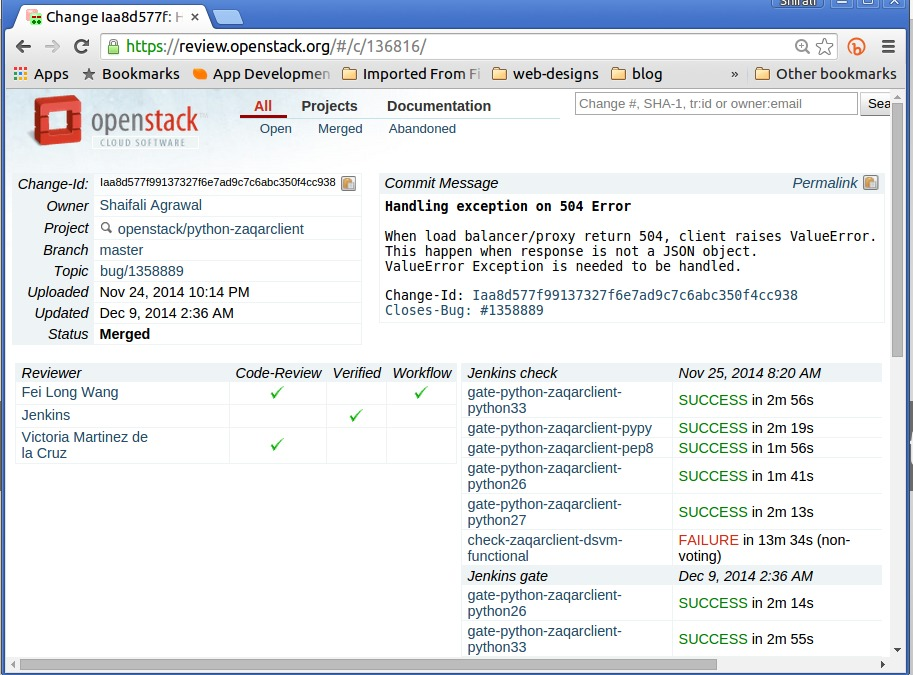
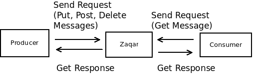
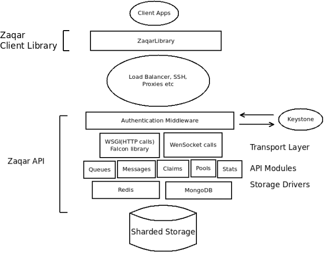

Outreachy with OpenStack Zaqar

Who am I?

Google Summer of Code
- Aimed to encourage more students into Open Source development
- Focused on Coding
- Only development tasks!
- Can apply as many times as you want while you are a student
Outreachy
- Aimed to encourage more women to get involved with Computer Science, tech and the Open Source world
- Run by GNOME Foundation
- Previously known as Outreach Program for Women(OPW)
Sponsors

Eligibility for Outreachy
- Most of the projects are only for Women
- Have not been a previous GSoC or Outreachy (OPW) intern
- No age limit, no need to be student
- Projects involve coding, design, documentation, marketing
- Happens twice a year!
How it Works?
- Choose a project
- Talk to the mentor and other developers of that project
- Install and play with the software/product
- Make initial contribution(s)
- Write Application
- Submit it!
How it Worked for me!
- I chose few Python based, data related projects
- Started lurking on thier IRC channel
- #openstack-opw for OpenStack
- Discuss about project with Mentor and other developers
- Decided to work with OpenStack :)
- Installed OpenStack using DevStack
- Got help from:
- Former Outreachy inters: vkmc, sayali, amalagon
- Mentors: flaper87, iccha, nikhil_k
My Initial Contribution
- Best Way:
- Fix a Bug which is easy to fix
- tag low_hanging_fruits for OpenStack
- I got familiar with:
- Code Base
- Contributing Process
- Code Review Process
- Hacking Rules
My First Patch 
Application Process
- Discuss more with the assigned mentor about the project
- Write an application, get it reviewed
- Submit it!
You Achieve
- Get comfortable with Open Source development
- Get involved with the community
- Mentoring
- 5500 USD
- Travel Grant to attend OpenStack summit
- Job offers!
My Project
- Based on Zaqar
- To split the data and control planes of storage layer of Zaqar completely
- Mentor - Flavio Percoco(flaper87)
- Its fun working with Zaqar Devs!
What is Zaqar?
Multi-tenant Messaging and Notification service for OpenStack
Inside Black Box

Why Zaqar?
- The API
- HTTP based
- Firewall friendly
- Authenticate with Keystone
- Multiple messaging patterns
- Easy to Scale
- Fully configurable
My Task
- Zaqar is built with 2 layers - Transport and Storage
- Storage layer consists of two planes - data and control
- I have split the two planes such that now users can use different datastore for both the planes
- Blueprint Link
First Zaqar Patch

Contact Details
- exploreshaifali on IRC, github, twitter
- agrawalshaifali09@gmail.com
- Slides are available exploreshaifali.github.io